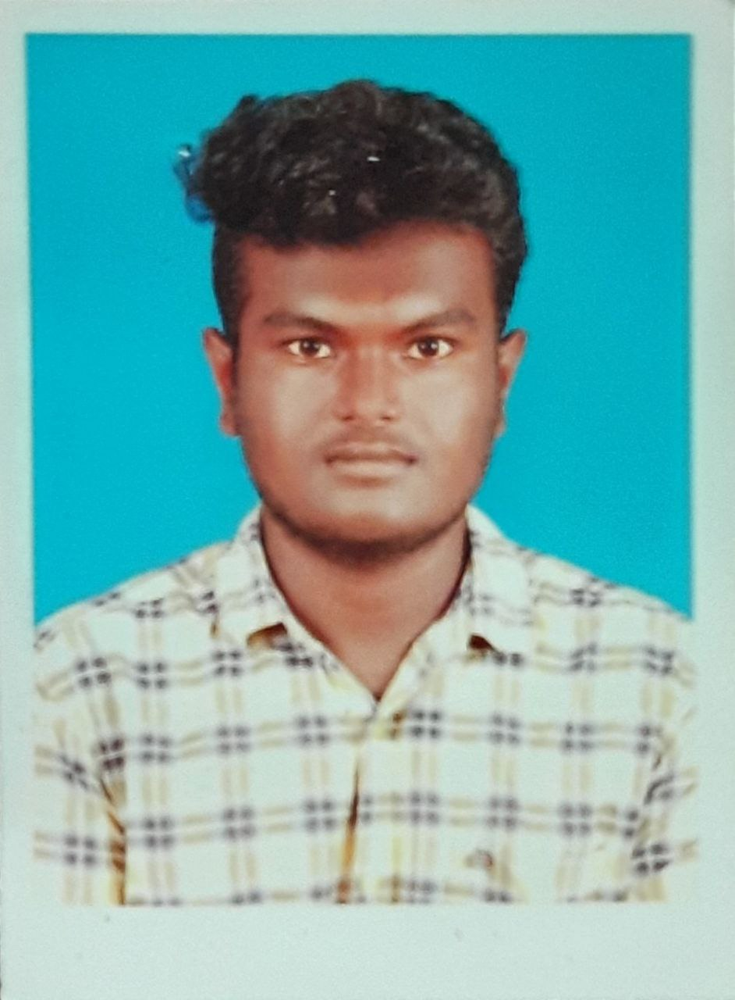

Personal Details :
Nawin S
08.02.2003
Tenkasi
Contact : 8056722706
About me :
I am flexible, reliable and possess excellent time
keeping skills. I am an enthusiastic, self-motivated,
reliable, responsible and hard working person. I am a
mature team worker and adaptable to all challenging
situations. I am able to work well both in a team
environment as well as using own initiative.
Technical Skills :
- Buisness management
- Hardware knowledge
- Business valuation
- Advanced proficiency in C,Java
Soft Skills :
- Logical thinking
- Decision making
- Communication
- Multi-tasking
Education Background
- KONGU ENGINEERING COLLEGE , ERODE
B.E - Mechatronics engineering
CGPA : 7.4
- ST.Joseph Mat.HR.sec.school,Sankarankovil
Completed Higher education
in 2021
Percentage : 90%
- ST.Joseph Mat.HR.sec.school,Sankarankovil
Completed Secondary education
in 2019
Percentage : 90.4%
Experience
- Attended a workshop in MIT, Chennai about Website development.
- Gone an internship at SIVA TEXTILE INDUSTRY for a week.
- Presented a paper about Debris(Trash skimmer) in Exodia-2K23 in KEC.
- Presented a paper about Robotic arm in SSN chennai .
- Presented a paper about Nano leef power source in SKCET.
- Finished a project named DEBRIS-detatchable trash skimmer boat in IDEATHON-2022 in KEC
- Function Coordinator in SDC inaugral and Lecture event
- Active member in SDC as an Executive member
- Aspiring filmmaker,dancer,mimicry artist.
- And secured many trophies in my college.